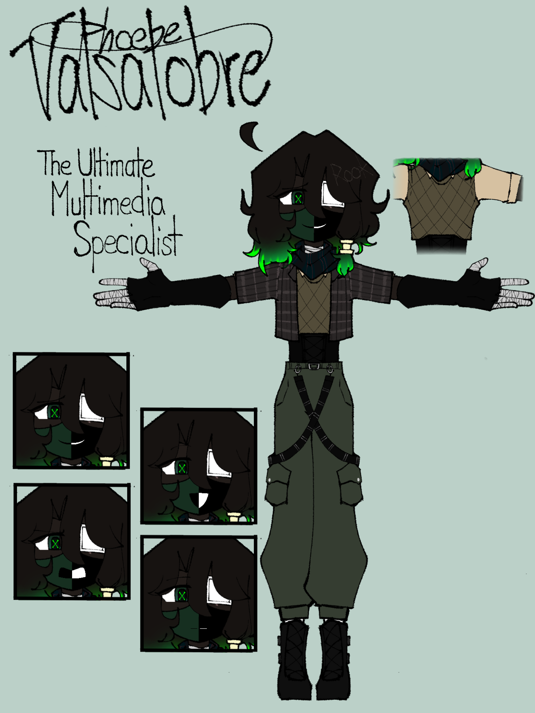
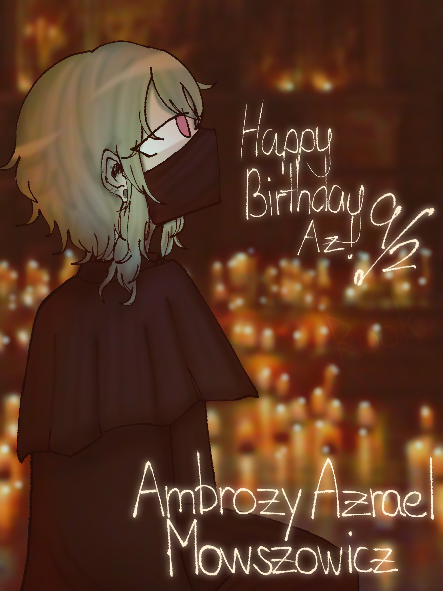
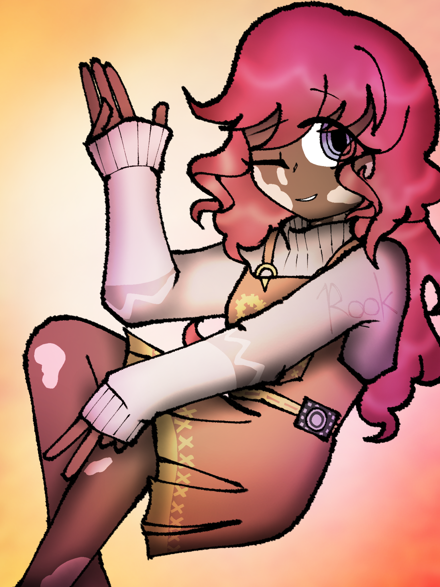
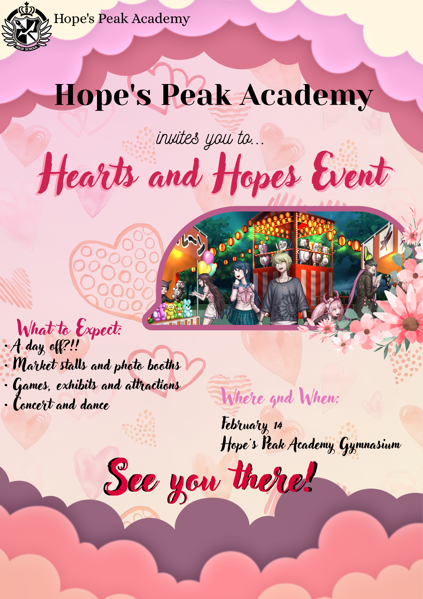
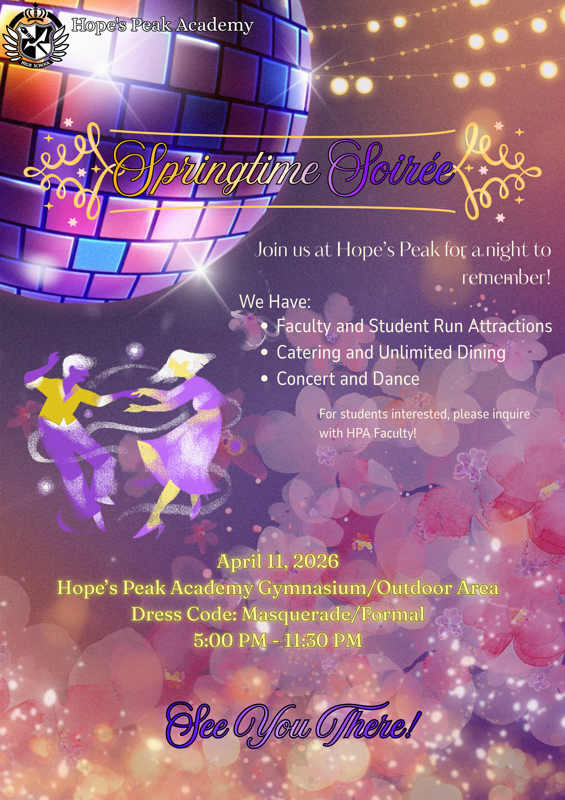
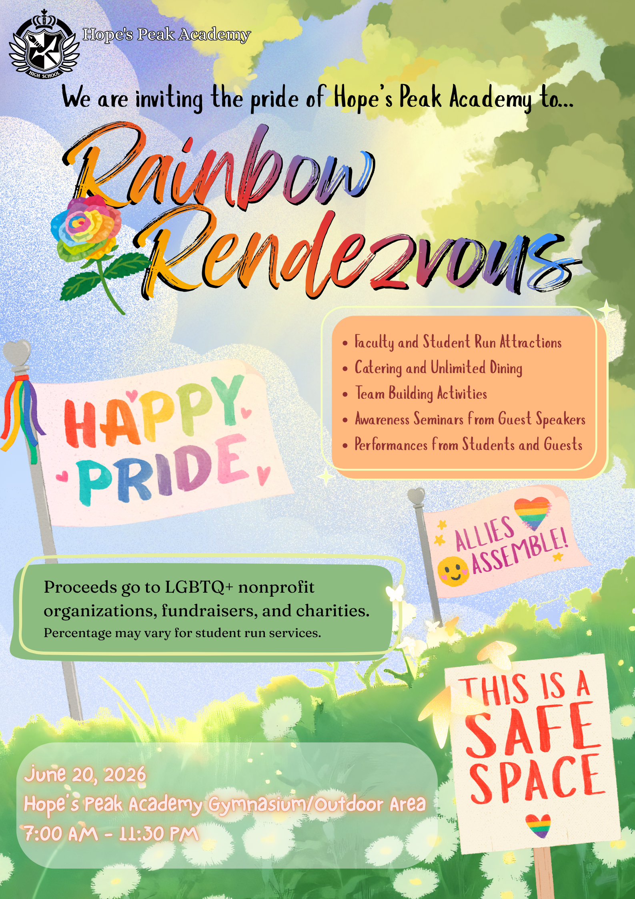
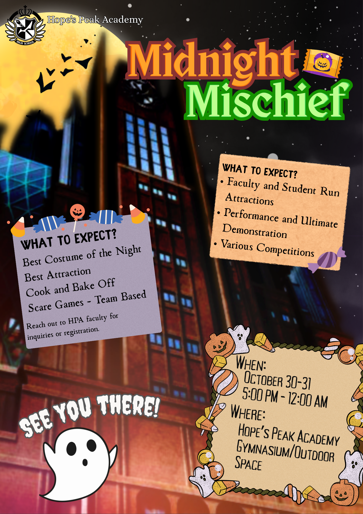
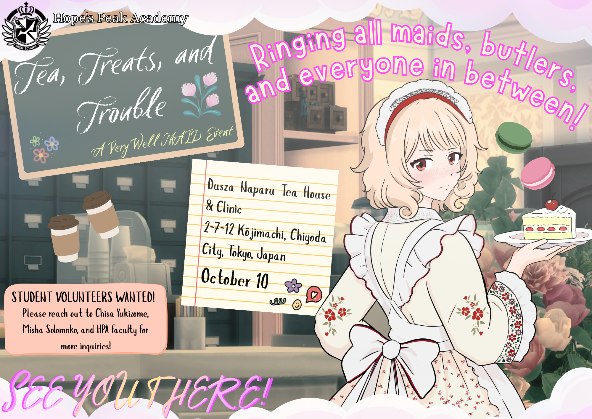

Greetings and salutations, digital visitors!
Welcome to my page, with future updates upcoming. I am Beatrice Temple, a sophomore studying Bachelor of Arts in Multimedia Studies (BAMS). I'm 21 and for 18 of those years, I've been surrounded by technology and media such as computers, phones, and the Internet, which had a significant impact on my interests, hobbies, as well as my social life.
I get involved in a lot of video games, fandoms, and communities and create a lot of content out of it (OCs, fanart, fanfic, the likes). I come off as a chatterbox sometimes, so the moment I find out we have a mutual interest, you'd BEST believe I will be nagging you about it /lh.
Considering my chosen degree, I would say I am well versed in mediums such as art, audio, text, and video. One thing I need mastering in is coding, sometimes the structure overwhelms little me. Hopefully I'll get better here at MMS 171 and MMS 142.
Interests
1. Video Games
- Story Driven
- MMORPG
- Roleplay
- Simulation
- Roguelike
- Idle Games
2. Art and Animation
- Traditional and Digital Art
- 2D and 3D Animation
- Stopmotion
- Hybrid Animation
3. Music
- Musical Theater
- Vocaloid
- Nerdcore
- Indie Music
- Pop
- Acoustic
- Game OSTs
4. Media
- Movies
- Anime
- Visual Novels
- Animated Series
- Analog Horror
- Alternate Reality Game
- Unfiction
Fandoms, if you will
- Danganronpa
- Anomaly Cafe
- Deadly Delivery
- Warrior Cats
- The Evillious Chronicles
- Sky: Children of the Light
Recent Art



Passion Projects
Signal Lost: 3:13 AM
Signal Lost: 3:13 AM is an experimental audio drama I made for a project in MMS 172: Audio in Multimedia. It was a result of my love for video games, interests in stuff like analog horror, unfiction, and ARGs. It tells a story about Lia Romero, a missing student, and Len Marquez, a private investigator who goes looking for her in a mysterious forest.
I used a found footage approach combined with the Autonomous Sensory Meridian Response (ASMR) in sound panning, aimed to make the audience picture themselves in the moment instead of being a passive listener. It was my first time making something like this and I'm proud of how it turned out,especially when I took a creative risk instead of something simpler like a song cover or an audiobook. It helped me get out of my comfort zone and try my best at something more complex.
You can check Signal Lost: 3:13 AM out here:
https://soundcloud.com/beatrice-temple/signallost313am/s-qqMPGnI5wl6
Or you can read my more detailed page about it here.
Panopticophobia
A Danganronpa fangame taking place in a dystopian setting where drama, violence, and betrayal are sensationalized. If you were to join one of many kinds of death games, you are given an opportunity to experience something other than your mundane and meaningless existence (best part, if you really do good, it comes with generous amounts of money). It's a portmanteau of "panopticon", which is a circular prison in which all prisoners can be observed at all times and "phobia", which is the persistent and oftentimes irrational fear directed towards something.
Even if you are consenting to the games, perhaps even looking forward to it, your consciousness that will be copied into these virtual simulations will remember no such thing. With no memory of ever agreeing to such a game, the version of yourself the audience sees will be your true self, immortalizing your best and worst moments for all to see. This digital footprint will haunt you long afterwards, and regardless of whether you were at your highest or lowest point of your life upon joining, you will only be remembered by the way you performed during your season. Your entire existence will only be defined by the one your audience got to see.
This isn't as fleshed out and doesn't have much media outside of concepts and characters, as I've been procrastinating it and have been busy with other things. I do plan to make it a mixed media project, using ARG elements and analog horror creative directions.
Event Posters
I like to make in-universe event posters for a roleplaying app I am active in (OCSN, if anyone's curious). It makes it more enjoyable for everyone involved when my friend and I host events, and I also get to have a go at practicing designs and layouts. It's really a toughie having to make sure the graphics were consistent, especially when compression in OCSN tends to alter the photos quite a bit.
I only had difficulty creating them when I'm given different material for it. For Tea, Treats, and Trouble, I was given background photos from Sims 4 and an artwork of a friend's OC to work with, and for Midnight Mischief, I had to crop a background of a CGI from Danganronpa 2: Goodbye Despair and rendered it so it looked like it was taken at night (the building in the poster).





Contact Me!
If you wish to contact me, feel free to find me in the following platforms:
Facebook: Beatrice Temple
MyPortal: Beatrice Temple
Gmail: bbtemple@up.edu.ph
You can learn more about me in my academic portfolio!
https://sites.google.com/up.edu.ph/bams-temple-portfolio/home